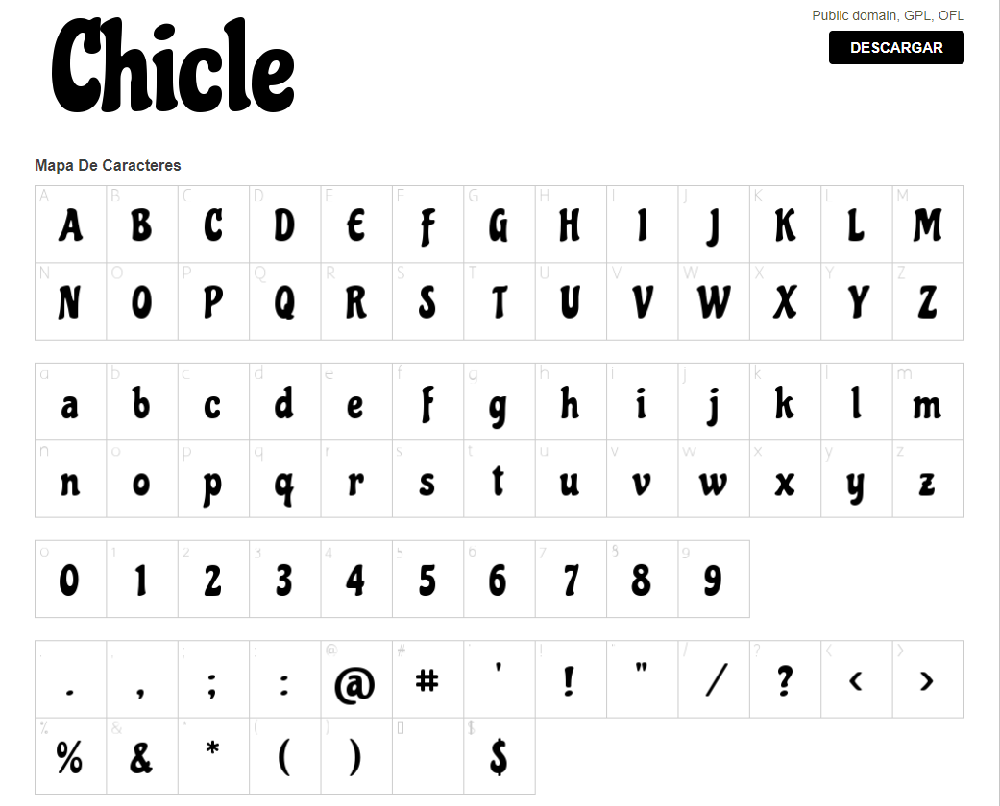
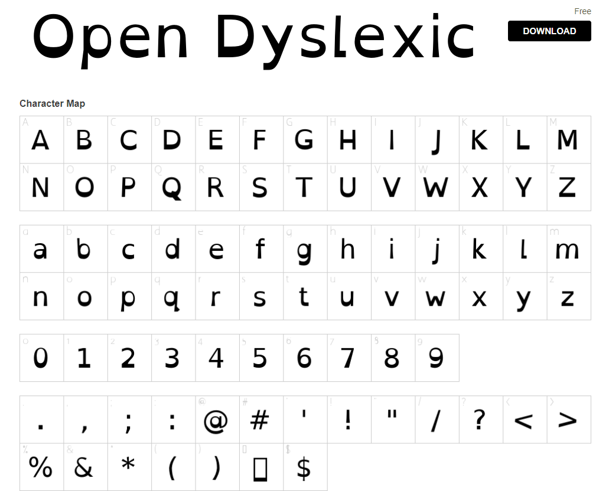

Como fuente buscamos utilizar una fuente que sea fácil de leer y que además que capte la atención de niños. Por ello vamos a usar la fuente Chicle que tiene un aspecto lúdico y amigable, lo que la hace atractiva para un público joven; para los títulos, menús y categorías mientras que obtaremos por Open Dyslexic para las descripciones de los productos al ser una fuente fácilmente legible y clara incluso para personas que sufren de dislexia.
 